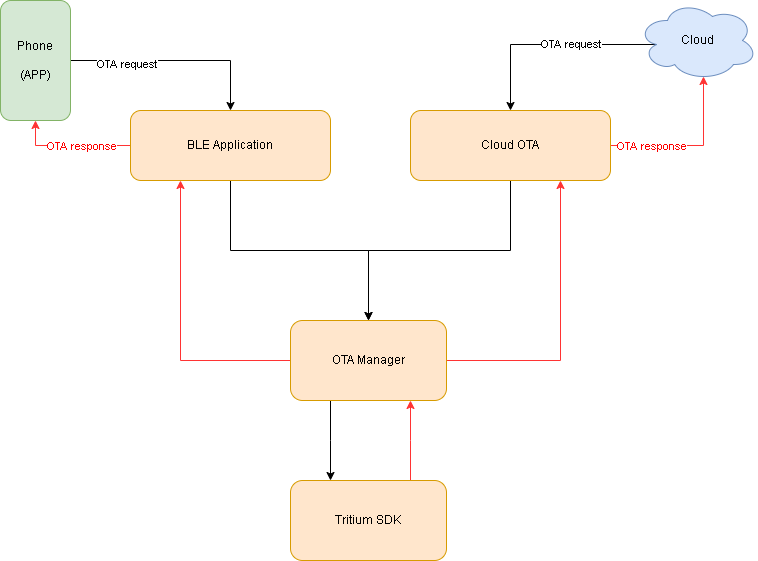

OTA

Over-The-Air (OTA) is a procedure to update the firmware without the use of physical wires. OTA is responsible for the flash procedure. The OTA data can be received from phone app via BLE or cloud via Wi-Fi connection. When a product is ready and released in the field, OTA can be used to upload new firmware that brings new features.
OTA via BLE
"OTA via BLE" can complete firmware update via Bluetooth from the mobile phone APP (e.g. "Opulinks"). First, send an "OTA request" message to the device from the mobile phone. After receiving, BLE Application will parse the "OTA request" message and request OTA Manager to execute OTA process.
The developer can call BLE Application API OPL_DataRecvHandler to pass the "OTA request" message to BLE Application when this message enters User Application from BLE Manager.
static void APP_EvtHandler_BleDataInd(uint32_t u32EventId, void *pData, uint32_t u32DataLen)
{
OPL_DataRecvHandler(pData, (uint16_t)u32DataLen);
}
There are four stage in OTA procedure.
#if (OTA_ENABLED == 1)
{OPL_DATA_REQ_OTA_VERSION, OPL_DataProtocol_OtaVersion},
{OPL_DATA_REQ_OTA_UPGRADE, OPL_DataProtocol_OtaUpgrade},
{OPL_DATA_REQ_OTA_RAW, OPL_DataProtocol_OtaRaw},
{OPL_DATA_REQ_OTA_END, OPL_DataProtocol_OtaEnd},
#endif
To start OTA, the BLE Application will first receive an event OPL_DATA_REQ_OTA_VERSION and call OTA Manager API OTA_CurrentVersionGet to get current OTA firmware version.
static void OPL_DataProtocol_OtaVersion(uint16_t type, uint8_t *data, int len)
{
OPL_LOG_DEBG(OPL, "OPL_DATA_REQ_OTA_VERSION");
uint16_t pid;
uint16_t cid;
uint16_t fid;
T_OplErr tEvtRst = OTA_CurrentVersionGet(&pid, &cid, &fid);
if (OPL_OK != tEvtRst)
OPL_OtaSendVersionRsp(OPL_DATA_OTA_ERR_HW_FAILURE, 0, 0, 0);
else
OPL_OtaSendVersionRsp(OPL_DATA_OTA_SUCCESS, pid, cid, fid);
}
If checking OTA firmware version OK, the device will receive OPL_DATA_REQ_OTA_UPGRADE and call OTA Manager API OTA_UpgradeBegin to start to upgrade firmware.
static void OPL_DataProtocol_OtaUpgrade(uint16_t type, uint8_t *data, int len)
{
OPL_LOG_DEBG(OPL, "OPL_DATA_REQ_OTA_UPGRADE");
T_OplOtaData *ota = gTheOta;
T_OplErr tEvtRst = OPL_OK;
tEvtRst = OTA_UpgradeBegin(&g_u16OtaSeqId, ota_hdr, OPL_OtaTimeoutIndCb);
if(OPL_OK == tEvtRst)
{
OPL_OtaSendUpgradeRsp(OPL_DATA_OTA_SUCCESS);
gTheOta = ota;
}
else
{
OPL_SendEndRsp(OPL_DATA_OTA_ERR_HW_FAILURE, TRUE);
}
}
If starting OTA upgrading OK, the device will receive OPL_DATA_REQ_OTA_RAW and call OTA Manager API OTA_WriteData to start raw data of new firmware from mobile phone.
static void OPL_DataProtocol_OtaRaw(uint16_t type, uint8_t *data, int len)
{
OPL_LOG_DEBG(OPL, "OPL_DATA_REQ_OTA_RAW");
T_OplOtaData *ota = gTheOta;
T_OplErr tEvtRst = OPL_OK;
tEvtRst = OTA_WriteData(g_u16OtaSeqId, ota->buf, 256);
return;
}
If rawing data successfully, the device will receive OPL_DATA_REQ_OTA_END and call OTA Manager API OTA_UpgradeFinish to finish OTA process.
static void OPL_DataProtocol_OtaEnd(uint16_t type, uint8_t *data, int len)
{
OPL_LOG_DEBG(OPL, "OPL_DATA_REQ_OTA_END");
T_OplOtaData *ota = gTheOta;
uint8_t status = data[0];
if(OPL_OK == OTA_UpgradeFinish(g_u16OtaSeqId))
{
OPL_SendEndRsp(OPL_DATA_OTA_SUCCESS, TRUE);
}
else
{
OPL_SendEndRsp(OPL_DATA_OTA_ERR_CHECKSUM, TRUE);
}
return;
}
OTA via WI-FI
"OTA via WI-FI" update mechanism helps users to easily and securely update the new firmware on their device through Wi-Fi. To enable WI-FI OTA, the developer should enable CLOUD_OTA_ENABLED in cloud_config.h.
// WI-FI ota enable (OTA_ENABLE and OTA_Init() must required)
#ifndef CLOUD_OTA_ENABLED
#define CLOUD_OTA_ENABLED (1)
#endif
cloud_ota_http.c (Cloud OTA) is responsible for retrieving OTA data from cloud. In Cloud_OtaTaskHandler, the OTA event CLOUD_OTA_EVT_TYPE_DOWNLOAD will be received and then it applies Cloud_OtaHttpDownload to complete OTA process.
void Cloud_OtaTaskHandler(void *args)
{
osEvent tEvent;
T_CloudDataMsg *ptCloudOtaMsg;
for(;;)
{
// wait event
tEvent = osMessageGet(g_tCloudOtaQueueId, osWaitForever);
if(tEvent.status == osEventMessage)
{
ptCloudOtaMsg = (T_CloudDataMsg *)tEvent.value.p;
switch(ptCloudOtaMsg->u32EventId)
{
case CLOUD_OTA_EVT_TYPE_DOWNLOAD:
{
int32_t i32Ret = Cloud_OtaHttpDownload((char *)ptCloudOtaMsg->u8aData, (int)ptCloudOtaMsg->u32DataLen);
break;
}
}
}
}
}
Cloud_OtaHttpDownloadis a single task to execute "OTA via WI-FI" process. "OTA via WI-FI" process include connecting to http server, getting current OTA version, retrieving raw data of new firmware from cloud, and finishing OTA process via OTA Manager.
int32_t Cloud_OtaHttpDownload(char *url, int len)
{
char get_url[CLOUD_OTA_HTTP_URL_LEN];
char *buf;
int8_t i8Ret = HTTPCLIENT_ERROR_CONN;
uint32_t u16UrlLen = strlen(url);
uint16_t u16Pid, u16Cid, u16Fid;
uint8_t u8RetryCount = 0;
// connect to http server
do
{
i8Ret = httpclient_connect(&g_tCloudOtaHttpClient, get_url);
if(!i8Ret)
{
OPL_LOG_INFO(CLOUD, "Connect to http server");
break;
}
else
{
osDelay(1000);
u8RetryCount ++;
OPL_LOG_WARN(CLOUD, "Connect to http server fail, retry count (%d)", u8RetryCount);
}
} while(u8RetryCount < CLOUD_OTA_HTTP_CONNECTION_RETRY_COUNT);
// get current ota version
OTA_CurrentVersionGet(&u16Pid, &u16Cid, &u16Fid);
OPL_LOG_DEBG(CLOUD, "pid=%d, cid=%d, fid=%d", u16Pid, u16Cid, u16Fid);
//raw data of new firmware from the cloud
i8Ret = _Cloud_OtaHttpRetrieveGet(get_url, buf, CLOUD_OTA_HTTP_DATA_LEN);
if(0 > i8Ret)
{
if(OPL_OK != OTA_UpgradeGiveUp(g_u16OtaSeqId))
{
OPL_LOG_ERRO(CLOUD, "OTA give up fail");
}
}
else
{
//complete OTA
if(OPL_OK != OTA_UpgradeFinish(g_u16OtaSeqId))
{
OPL_LOG_ERRO(CLOUD, "OTA finish fail");
}
}
OPL_LOG_INFO(CLOUD, "download result = %d", i8Ret);
// close http connection
httpclient_close(&g_tCloudOtaHttpClient);
free(buf);
buf = NULL;
return i8Ret;
}
How To...
- How to execute OTA via WI-FI in a single task
Cloud_OtaHttpDownload is a single task to execute "OTA via WI-FI" process
-
Apply
httpclient_connectto connect http server -
Apply
OTA_CurrentVersionGetGet current OTA firmware version via OTA Manager -
Apply
_Cloud_OtaHttpRetrieveGetto retrieve raw data of new firmware from the cloud -
If retrieving sucessfully, apply
OTA_UpgradeFinishto complete OTA via OTA Manager -
Apply
httpclient_closeto close http connection